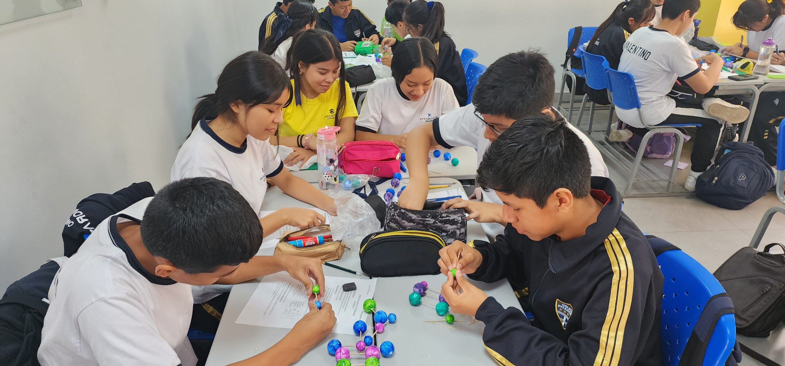
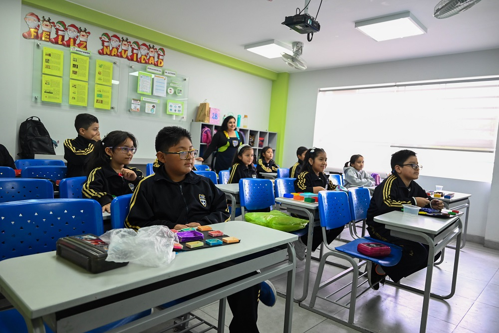
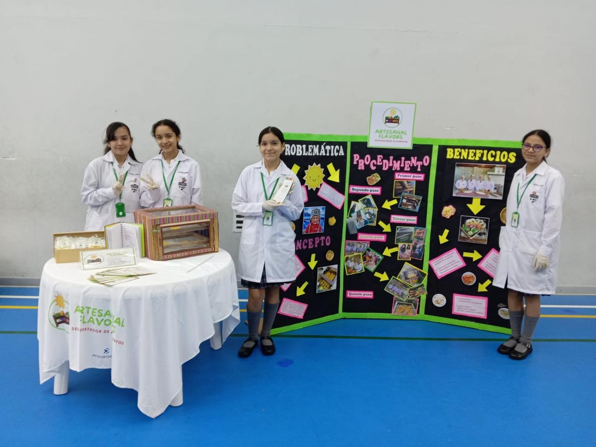
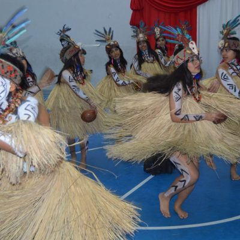
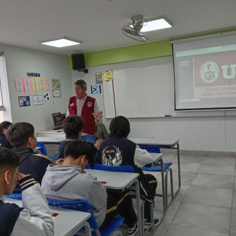

Aprender haciendo
Preguntar, experimentar y crear. El conocimiento cobra sentido cuando se conecta con la vida.
Un colegio donde la curiosidad se convierte en aprendizaje, los talentos encuentran su espacio y cada estudiante crece acompañado.

Aquí, cada talento
encuentra su lugar.APRENDER · COMPARTIR · CRECER
Inscripciones abiertas para primaria y secundaria.
Una propuesta que reúne conocimientos, emociones y valores para crecer con confianza.
Preguntar, experimentar y crear. El conocimiento cobra sentido cuando se conecta con la vida.
Tutoría cercana y orientación psicológica para aprender a conocerse y convivir con los demás.
Una experiencia de aprendizaje que desarrolla confianza para comunicarse y explorar nuevas oportunidades.
Herramientas digitales que complementan el aula y ayudan a investigar, colaborar y crear.
Respeto, honestidad y solidaridad que se practican en los pequeños momentos de cada día.
Estudiantes, docentes y familias que suman sus talentos para construir una experiencia compartida.

En MINKA, las buenas preguntas dan paso a experiencias que conectan ideas y convierten lo aprendido en algo propio.
Exploramos nuevas ideas con la guía de nuestros docentes.
Experimentamos, conversamos y aprendemos en equipo.
Integramos lo aprendido para responder a un desafío real.
Acompañamos los primeros grandes descubrimientos con experiencias que despiertan las ganas de aprender.
Impulsamos el pensamiento crítico y la confianza para que cada estudiante construya su propio camino.


Nuestros estudiantes exploran, crean y comparten soluciones para un mundo mejor.
Leer la historia
Una jornada para descubrir la riqueza de nuestras tradiciones y lo que nos une.
Leer la historia
Acompañamos a nuestros jóvenes a conocer sus talentos y explorar nuevos caminos.
Leer la historiaLa educación también sucede en las conversaciones, las preguntas y los encuentros con nuestras familias.
Queremos que nuestros hijos aprendan con alegría y sientan que pueden ser ellos mismos. Ese es el colegio que imaginamos.Voces MINKA · Testimonio de ejemplo
Conoce nuestra propuesta y encuentra un lugar donde tu hijo pueda ser, descubrir y crecer.